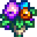
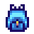

Pierre boltja

|
Hiányos fordítás Ezt a cikket vagy szakaszt nem fordították le teljesen magyarra. Üdvözlünk az oldal fordításával. |
| Pierre boltja | |
 | |
| Nyitvatartás: | Shop: 9am to 5pm Building: 9am to 9pm |
| Zárva: | Wednesday |
| Cím: | North of Town Square |
| Lakók: | |
Pierre Boltja is where you can buy various seeds, saplings, fertilizer, and other useful items. After you have 8 hearts of friendship with a marriage candidate, a bouquet of flowers will also be available for purchase. Some products in stock will vary from season to season and others are in-stock year-round.
You can sell Pierre foraged items, crops, artisan goods, cooked dishes, and animal products if you need instant gold and don't want to wait overnight for shipping.
Tip: You can buy a large amount of an item quickly if you hold Shift and click the Right Mouse Button or trackpad continuously.
At first, Pierre's General Store is closed on Wednesday. However, if you finish all of the Community Center bundles, Pierre's General Store will be open 7 days a week.
You can enter the building until 9pm, but Pierre leaves the sales counter at 5pm every day, so you cannot purchase or sell goods after 5pm.
Year-Round Stock
| Image | Megnevezés | Leírás | Ára |
|---|---|---|---|
| Grass Starter | Ezt rakd a farmodra, hogy egy új fűfoltot növessz. | ||
| Fűmagvak Recipe | Egy recept, amiből ez készíthető: Fűmagvak | ||
| Sugar | Édesíteni lehet vele a tésztákat és cukorkákat. A túl sok egészségtelen lehet. | ||
| Wheat Flour | Egy gyakori sütési alapanyag, ami őrölt búzamagból lesz. | ||
| Rice | Egy alap gabona, amit gyakran tálalnak zöldségek alatt. | ||
| Oil | Mindenre használatos főzőolaj. | ||
| Vinegar | Egy régi erjesztett folyadék, amit rengeteg recepthez lehet felhasználni. | ||
| Basic Fertilizer | Kissé feljavítja a talaj minőségét, megnövelvén a jobb minőségű termések esélyét. Keverd megművelt földbe. | ||
| Quality Fertilizer | Feljavítja a talaj minőségét, megnövelvén a jobb minőségű termések esélyét. Keverd megművelt földbe. (Available in year 2+) |
||
| Basic Retaining Soil | Kis eséllyel ez a talaj az este után is öntözve marad. Keverd megművelt földbe. | ||
| Quality Retaining Soil | Jó eséllyel ez a talaj az este után is öntözve marad. Keverd megművelt földbe. | ||
| Speed-Gro | Stimulálja a levelek termékenységét. Legalább 10%-kal garantáltan megnöveli a növekedési rátát. Keverd megművelt földbe. | ||
| Deluxe Speed-Gro | Stimulálja a levelek termékenységét. Legalább 25%-kal garantáltan megnöveli a növekedési rátát. Keverd megművelt földbe. | ||
| Wallpaper (Random each day) | Kidekorálja az egyik szoba falát. | ||
| Flooring (Random each day) | Kidekorálja az egyik szoba padlóját. | ||
| Cherry Sapling | 28 nap múlva érik meg, és cseresznyefa lesz belőle. Tavasszal hoz gyümölcsöt. Csak akkor nő meg, ha a 8 környező "négyzet" üres. | ||
| Apricot Sapling | 28 nap múlva érik meg, és sárgabarackfa lesz belőle. Tavasszal hoz gyümölcsöt. Csak akkor nő meg, ha a 8 környező "négyzet" üres. | ||
| Orange Sapling | 28 nap múlva érik meg, és narancsfa lesz belőle. Nyáron hoz gyümölcsöt. Csak akkor nő meg, ha a 8 környező "négyzet" üres. | ||
| Peach Sapling | 28 nap múlva érik meg, és őszibarackfa lesz belőle. Nyáron hoz gyümölcsöt. Csak akkor nő meg, ha a 8 környező "négyzet" üres. | ||
| Pomegranate Sapling | 28 nap múlva érik meg, és gránátalmafa lesz belőle. Ősszel hoz gyümölcsöt. Csak akkor nő meg, ha a 8 környező "négyzet" üres. | ||
| Apple Sapling | 28 nap múlva érik meg, és almafa lesz belőle. Ősszel hoz gyümölcsöt. Csak akkor nő meg, ha a 8 környező "négyzet" üres. | ||
| Catalogue | Végtelen hozzáférést biztosít minden tapétához és padlóhoz... az otthonod kényelmében! | ||
|  | Bouquet | Egy ajándék, ami kimutatja romantikus szándékaidat. (Unlocked after reaching 8 hearts with a marriage candidate) |
Pierre also sells backpack upgrades until they are purchased by the player. These appear at the right side of the counter, instead of in Pierre's "shop" menu.
| Image | Megnevezés | Ára | Leírás | Elérhető |
|---|---|---|---|---|
| Large Pack | Feloldja a második eszköztár sort (12 új hely, összesen 24). | A játék elején | ||
|  | Deluxe Pack | Feloldja a harmadik eszköztár sort (12 új hely, összesen 36). | After purchasing the Large Pack. |
Spring Stock
| Image | Megnevezés | Leírás | Ára |
|---|---|---|---|
| Parsnip Seeds | Ezeket tavasszal ültesd el. 4 napig tart megérnie. | ||
| Bean Starter | Ezeket tavasszal ültesd el. 10 napig tart megérniük, de utána tovább termelnek. Egy lécen terem meg. | ||
| Cauliflower Seeds | Ezeket tavasszal ültesd el. 12 nap alatt nőnek ki a hatalmas karfiolok. | ||
| Potato Seeds | Ezeket tavasszal ültesd el. 6 napig tart megérniük, és kis eséllyel aratáskor több krumplit is adhat. | ||
| Tulip Bulb | Ezt tavasszal ültesd el. 6 nap alatt nőnek ki színes virágként. Válogatott színűek. | ||
| Kale Seeds | Ezeket tavasszal ültesd el. 6 napig tart megérnie. Kaszával arathatod le. | ||
| Jazz Seeds | Ezeket tavasszal ültesd el. 7 nap alatt nőnek ki kék gömbös virágként. | ||
| Garlic Seeds | Ezeket tavasszal ültesd el. 4 napig tart megérnie. (Available in year 2+) |
Summer Stock
| Image | Megnevezés | Leírás | Ára |
|---|---|---|---|
| Melon Seeds | Ezeket nyáron ültesd el. 12 napig tart megérnie. | ||
| Tomato Seeds | Ezeket nyáron ültesd el. 11 napig tart megérnie, és az első aratás után is termel. | ||
| Blueberry Seeds | Ezeket nyáron ültesd el. 13 napig tart megérnie, és az első aratás után is termel. | ||
| Pepper Seeds | Ezeket nyáron ültesd el. 5 napig tart megérnie, és az első aratás után is termel. | ||
| Wheat Seeds | Ezeket nyáron vagy ősszel ültesd el. 4 napig tart megérnie. Kaszával arathatod le. | ||
| Radish Seeds | Ezeket nyáron ültesd el. 6 napig tart megérnie. | ||
| Poppy Seeds | Ezeket nyáron ültesd el. 7 nap alatt világos vörös virág lesz belőlük. | ||
| Spangle Seeds | Ezeket nyáron ültesd el. 8 nap alatt élénk trópusi növényt termelnek. Válogatott színűek. | ||
| Hops Starter | Ezeket nyáron ültesd el. 11 nap alatt nőnek ki, de utána tovább termelnek. Egy lécen terem meg. | ||
| Corn Seeds | Ezeket nyáron vagy ősszel ültesd el. 14 napig tart megérnie, és az első aratás után is termel. | ||
| Sunflower Seeds | Ezeket nyáron vagy ősszel ültesd el. 8 nap alatt nőnek ki nagy napraforgóként. Aratáskor több magvat ad. | ||
| Red Cabbage Seeds | Ezeket nyáron ültesd el. 9 napig tart megérnie. (Available in year 2+) |
Fall Stock
| Image | Megnevezés | Leírás | Ára |
|---|---|---|---|
| Eggplant Seeds | Ezeket ősszel ültesd el. 5 napig tart megérnie, és az első aratás után is termel. | ||
| Corn Seeds | Ezeket nyáron vagy ősszel ültesd el. 14 napig tart megérnie, és az első aratás után is termel. | ||
| Pumpkin Seeds | Ezeket ősszel ültesd el. 13 napig tart megérnie. | ||
| Bok Choy Seeds | Ezeket ősszel ültesd el. 4 napig tart megérnie. | ||
| Yam Seeds | Ezeket ősszel ültesd el. 10 napig tart megérnie. | ||
| Cranberry Seeds | Ezeket ősszel ültesd el. 7 napig tart megérnie, és az első aratás után is termel. | ||
| Sunflower Seeds | Ezeket nyáron vagy ősszel ültesd el. 8 nap alatt nőnek ki nagy napraforgóként. Aratáskor több magvat ad. | ||
| Fairy Seeds | Ezeket ősszel ültesd el. 12 nap alatt nőnek ki különös virágként. Válogatott színűek. | ||
| Amaranth Seeds | Ezeket ősszel ültesd el. 7 nap alatt nőnek ki. Kaszával arathatod le. | ||
| Grape Starter | Ezeket ősszel ültesd el. 10 nap alatt nőnek ki, de utána tovább termelnek. Egy lécen terem meg. | ||
| Wheat Seeds | Ezeket nyáron vagy ősszel ültesd el. 4 napig tart megérnie. Kaszával arathatod le. | ||
| Artichoke Seeds | Ezeket ősszel ültesd el. 8 napig tart megérnie. (Available in year 2+) |
Player-Derived Stock
If the player chooses to sell items to Pierre or Willy's Fish Shop, there is a chance they will appear in the list of items for sale at Pierre's, especially if sold to Pierre in large quantity. Any of these items that are edible will be available for purchase in limited quantities. Additional villager dialogues may appear indicating they've seen or purchased the items.
Bug
Pressing Alt together with Enter will exit the player out of buying goods in Pierre's shop, even if an item is in hand. However, the item will be destroyed.
Trivia
- Even though on the outside of the shop it looks as if there is an upstairs balcony, Pierre's has no second floor accessible from the inside.
- Pierre often takes credit for finding, catching, or cooking items that the player has sold to him as player-derived stock.
Galéria

Beltér
| Épületek | ||
|---|---|---|
| Kereskedők | Ácsműhely • A Varázsló tornya • Jégkrémstand • Halbolt • Harvey klinikája • Hullócsillag szalon • JojaMart • Kalandorok céhe • Kaszinó • Kovács • Könyvkereskedő • Marnie tanyája • Oázis • Óriási tönk • Pierre boltja • Qi diós szobája • Romos ház • Sivatagi kereskedő • Szigeti kereskedő • Utazó szekér • Vulkáni törpe | |
| Házak | Elliott faháza • Faház • Folyó út 1 • Folyó út 2 • Fűzfa köz 1 • Fűzfa köz 2 • Hegyi út 24 • Lakókocsi • Leah kunyhója • Parasztház • Polgármester háza • Sátor | |
| Farm épületek | Gazdálkodás | Csűr • Halastó • Háziállat tálka • Istálló • Istálló (ló) • Kunyhó • Kút • Malom • Ragacsketrec • Raktár • Siló • Üvegház |
| Különleges | Arany óra • Farm obeliszk • Föld obeliszk • Junimo kunyhó • Sivatagi obeliszk • Sziget obeliszk • Víz obeliszk | |
| Egyéb | Boszorkány kunyhója • Fürdő • Joja raktárépület • Közösségi központ • Kutya karám • Mozi • Múzeum • Szigeti iroda | |